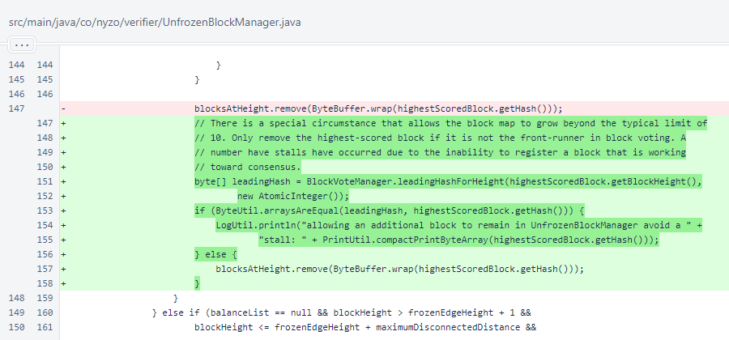

Nyzo version 591 (commit on GitHub) modifies block registration to avoid blockchain stalls.
This version affects the verifier.
The blockchain has stalled several times in the past few days, always on a new verifier. The mesh is in an odd state of disagreement right now regarding lottery results. This is being thoroughly investigated.
The consensus process, though, is designed to and must be able to work through disagreements. The scoring change of version 590 provided the means for verifiers to work through new-verifier disagreements. However, the UnfrozenBlockManager was sabotaging the process by discarding the leading block in many cases.
This version adds a condition that forces the UnfrozenBlockManager to register the leading block even if it is the highest-scored block, and even if the map is currently beyond its intended maximum size.
In UnfrozenBlockManager.registerBlock(), a check of the leading hash was added. If the block that is chosen for removal is currently leading in voting, it is allowed to remain in the map.
